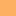

<!doctype html>
<html lang="en">
    <head>
        <meta charset="utf-8">
        <meta http-equiv="X-UA-Compatible" content="IE=edge">
        <meta name="viewport" content="initial-scale=1,user-scalable=no,maximum-scale=1,width=device-width">
        <meta name="mobile-web-app-capable" content="yes">
        <meta name="apple-mobile-web-app-capable" content="yes">
        <link rel="stylesheet" href="css/leaflet.css">
        <link rel="stylesheet" href="css/qgis2web.css"><link rel="stylesheet" href="css/fontawesome-all.min.css">
        <style>
        html, body, #map {
            width: 100%;
            height: 100%;
            padding: 0;
            margin: 0;
        }
        </style>
        <title></title>
    </head>
    <body>
        <div id="map">
        </div>
        <script src="js/qgis2web_expressions.js"></script>
        <script src="js/leaflet.js"></script>
        <script src="js/leaflet.rotatedMarker.js"></script>
        <script src="js/leaflet.pattern.js"></script>
        <script src="js/leaflet-hash.js"></script>
        <script src="js/Autolinker.min.js"></script>
        <script src="js/rbush.min.js"></script>
        <script src="js/labelgun.min.js"></script>
        <script src="js/labels.js"></script>
        <script src="data/3_0.js"></script>
        <script src="data/_1.js"></script>
        <script src="data/_2.js"></script>
        <script src="data/_3.js"></script>
        <script src="data/_4.js"></script>
        <script src="data/_5.js"></script>
        <script>
        var map = L.map('map', {
            zoomControl:true, maxZoom:8, minZoom:4
        })
        var hash = new L.Hash(map);
        map.attributionControl.setPrefix('<a href="https://github.com/tomchadwin/qgis2web" target="_blank">qgis2web</a> &middot; <a href="https://leafletjs.com" title="A JS library for interactive maps">Leaflet</a> &middot; <a href="https://qgis.org">QGIS</a>');
        var autolinker = new Autolinker({truncate: {length: 30, location: 'smart'}});
        var bounds_group = new L.featureGroup([]);
        function setBounds() {
            if (bounds_group.getLayers().length) {
                map.fitBounds(bounds_group.getBounds());
            }
        }
        function pop_3_0(feature, layer) {
            var popupContent = '<table>\
                    <tr>\
                        <td colspan="2">' + (feature.properties['index'] !== null ? autolinker.link(feature.properties['index'].toLocaleString()) : '') + '</td>\
                    </tr>\
                    <tr>\
                        <td colspan="2">' + (feature.properties['CH_min'] !== null ? autolinker.link(feature.properties['CH_min'].toLocaleString()) : '') + '</td>\
                    </tr>\
                    <tr>\
                        <td colspan="2">' + (feature.properties['CH_max'] !== null ? autolinker.link(feature.properties['CH_max'].toLocaleString()) : '') + '</td>\
                    </tr>\
                    <tr>\
                        <td colspan="2">' + (feature.properties['label'] !== null ? autolinker.link(feature.properties['label'].toLocaleString()) : '') + '</td>\
                    </tr>\
                </table>';
            layer.bindPopup(popupContent, {maxHeight: 400});
        }

        function style_3_0_0(feature) {
            switch(String(feature.properties['index'])) {
                case '1':
                    return {
                pane: 'pane_3_0',
                stroke: false, 
                fill: true,
                fillOpacity: 1,
                fillColor: 'rgba(43,131,186,1.0)',
                interactive: false,
            }
                    break;
                case '2':
                    return {
                pane: 'pane_3_0',
                stroke: false, 
                fill: true,
                fillOpacity: 1,
                fillColor: 'rgba(171,221,164,1.0)',
                interactive: false,
            }
                    break;
                case '3':
                    return {
                pane: 'pane_3_0',
                stroke: false, 
                fill: true,
                fillOpacity: 1,
                fillColor: 'rgba(255,255,191,1.0)',
                interactive: false,
            }
                    break;
                case '4':
                    return {
                pane: 'pane_3_0',
                stroke: false, 
                fill: true,
                fillOpacity: 1,
                fillColor: 'rgba(253,174,97,1.0)',
                interactive: false,
            }
                    break;
                case '5':
                    return {
                pane: 'pane_3_0',
                stroke: false, 
                fill: true,
                fillOpacity: 1,
                fillColor: 'rgba(215,25,28,1.0)',
                interactive: false,
            }
                    break;
            }
        }
        map.createPane('pane_3_0');
        map.getPane('pane_3_0').style.zIndex = 400;
        map.getPane('pane_3_0').style['mix-blend-mode'] = 'normal';
        var layer_3_0 = new L.geoJson(json_3_0, {
            attribution: '',
            interactive: false,
            dataVar: 'json_3_0',
            layerName: 'layer_3_0',
            pane: 'pane_3_0',
            onEachFeature: pop_3_0,
            style: style_3_0_0,
        });
        bounds_group.addLayer(layer_3_0);
        map.addLayer(layer_3_0);
        function pop__1(feature, layer) {
            var popupContent = '<table>\
                    <tr>\
                        <td colspan="2">' + (feature.properties['город'] !== null ? autolinker.link(feature.properties['город'].toLocaleString()) : '') + '</td>\
                    </tr>\
                </table>';
            layer.bindPopup(popupContent, {maxHeight: 400});
        }

        function style__1_0() {
            return {
                pane: 'pane__1',
                radius: 4.0,
                opacity: 1,
                color: 'rgba(0,0,0,1.0)',
                dashArray: '',
                lineCap: 'butt',
                lineJoin: 'miter',
                weight: 1,
                fill: true,
                fillOpacity: 1,
                fillColor: 'rgba(231,50,247,1.0)',
                interactive: true,
            }
        }
        map.createPane('pane__1');
        map.getPane('pane__1').style.zIndex = 401;
        map.getPane('pane__1').style['mix-blend-mode'] = 'normal';
        var layer__1 = new L.geoJson(json__1, {
            attribution: '',
            interactive: true,
            dataVar: 'json__1',
            layerName: 'layer__1',
            pane: 'pane__1',
            onEachFeature: pop__1,
            pointToLayer: function (feature, latlng) {
                var context = {
                    feature: feature,
                    variables: {}
                };
                return L.circleMarker(latlng, style__1_0(feature));
            },
        });
        bounds_group.addLayer(layer__1);
        map.addLayer(layer__1);
        function pop__2(feature, layer) {
        }

        function style__2_0() {
            return {
                pane: 'pane__2',
                opacity: 1,
                color: 'rgba(239,23,27,1.0)',
                dashArray: '',
                lineCap: 'square',
                lineJoin: 'bevel',
                weight: 1.0,
                fillOpacity: 0,
                interactive: false,
            }
        }
        map.createPane('pane__2');
        map.getPane('pane__2').style.zIndex = 402;
        map.getPane('pane__2').style['mix-blend-mode'] = 'normal';
        var layer__2 = new L.geoJson(json__2, {
            attribution: '',
            interactive: false,
            dataVar: 'json__2',
            layerName: 'layer__2',
            pane: 'pane__2',
            onEachFeature: pop__2,
            style: style__2_0,
        });
        bounds_group.addLayer(layer__2);
        map.addLayer(layer__2);
        function pop__3(feature, layer) {
        }

        function style__3_0() {
            return {
                pane: 'pane__3',
                opacity: 1,
                color: 'rgba(238,20,23,1.0)',
                dashArray: '',
                lineCap: 'square',
                lineJoin: 'bevel',
                weight: 1.0,
                fillOpacity: 0,
                interactive: false,
            }
        }
        map.createPane('pane__3');
        map.getPane('pane__3').style.zIndex = 403;
        map.getPane('pane__3').style['mix-blend-mode'] = 'normal';
        var layer__3 = new L.geoJson(json__3, {
            attribution: '',
            interactive: false,
            dataVar: 'json__3',
            layerName: 'layer__3',
            pane: 'pane__3',
            onEachFeature: pop__3,
            style: style__3_0,
        });
        bounds_group.addLayer(layer__3);
        map.addLayer(layer__3);
        function pop__4(feature, layer) {
        }

        function style__4_0() {
            return {
                pane: 'pane__4',
                opacity: 1,
                color: 'rgba(238,20,16,1.0)',
                dashArray: '',
                lineCap: 'square',
                lineJoin: 'bevel',
                weight: 1.0,
                fillOpacity: 0,
                interactive: false,
            }
        }
        map.createPane('pane__4');
        map.getPane('pane__4').style.zIndex = 404;
        map.getPane('pane__4').style['mix-blend-mode'] = 'normal';
        var layer__4 = new L.geoJson(json__4, {
            attribution: '',
            interactive: false,
            dataVar: 'json__4',
            layerName: 'layer__4',
            pane: 'pane__4',
            onEachFeature: pop__4,
            style: style__4_0,
        });
        bounds_group.addLayer(layer__4);
        map.addLayer(layer__4);
        function pop__5(feature, layer) {
        }

        function style__5_0() {
            return {
                pane: 'pane__5',
                opacity: 1,
                color: 'rgba(241,21,17,1.0)',
                dashArray: '',
                lineCap: 'square',
                lineJoin: 'bevel',
                weight: 1.0,
                fillOpacity: 0,
                interactive: false,
            }
        }
        map.createPane('pane__5');
        map.getPane('pane__5').style.zIndex = 405;
        map.getPane('pane__5').style['mix-blend-mode'] = 'normal';
        var layer__5 = new L.geoJson(json__5, {
            attribution: '',
            interactive: false,
            dataVar: 'json__5',
            layerName: 'layer__5',
            pane: 'pane__5',
            onEachFeature: pop__5,
            style: style__5_0,
        });
        bounds_group.addLayer(layer__5);
        map.addLayer(layer__5);
        var baseMaps = {};
        L.control.layers(baseMaps,{' Курганская область': layer__5,' граница УрФО': layer__4,' Свердловская область': layer__3,' ХМАО': layer__2,' Населенные пункты ': layer__1,'Средние значения концентраций углеводородов, мг/м3<br /><table><tr><td style="text-align: center;"></td><td>менее 0.0007</td></tr><tr><td style="text-align: center;"></td><td>0.0007 - 0.0011</td></tr><tr><td style="text-align: center;"></td><td>0.0011 - 0.0016</td></tr><tr><td style="text-align: center;"></td><td>0.0016 - 0.0021</td></tr><tr><td style="text-align: center;"></td><td>0.00210 и более</td></tr></table>': layer_3_0,},{collapsed:false}).addTo(map);
        setBounds();
        var i = 0;
        layer__1.eachLayer(function(layer) {
            var context = {
                feature: layer.feature,
                variables: {}
            };
            layer.bindTooltip((layer.feature.properties['город'] !== null?String('<div style="color: #000000; font-size: 10pt; font-family: \'MS Shell Dlg 2\', sans-serif;">' + layer.feature.properties['город']) + '</div>':''), {permanent: true, offset: [-0, -16], className: 'css__1'});
            labels.push(layer);
            totalMarkers += 1;
              layer.added = true;
              addLabel(layer, i);
              i++;
        });
        resetLabels([layer__1]);
        map.on("zoomend", function(){
            resetLabels([layer__1]);
        });
        map.on("layeradd", function(){
            resetLabels([layer__1]);
        });
        map.on("layerremove", function(){
            resetLabels([layer__1]);
        });
        </script>
    </body>
</html>
